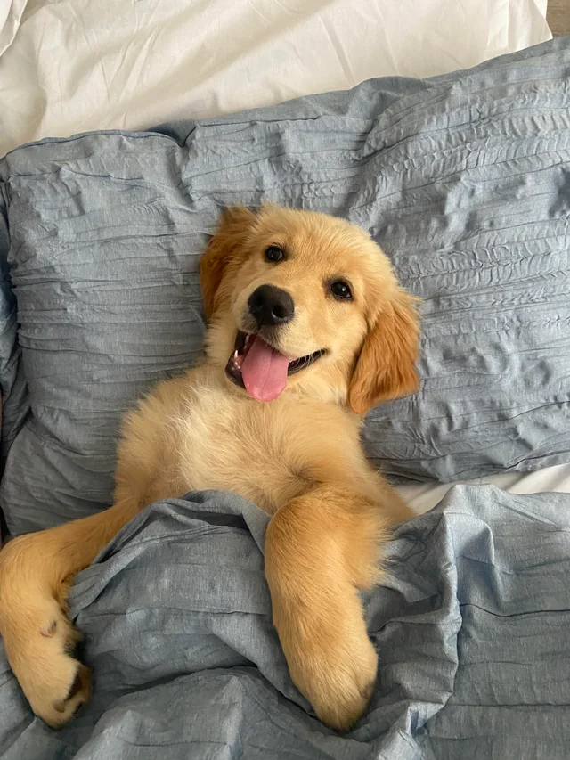

 Golden Retriever Es un perrito muy simpatico, siempre te espera con alegria y tira mucho pelo el desgraciado. Detalles: Edad: 3 años Color: Dorado Personalidad: Amigable y juguetón Vacunas al día Desparasitado Microchip implantado Leer mas...